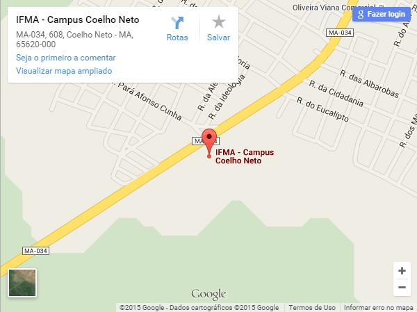
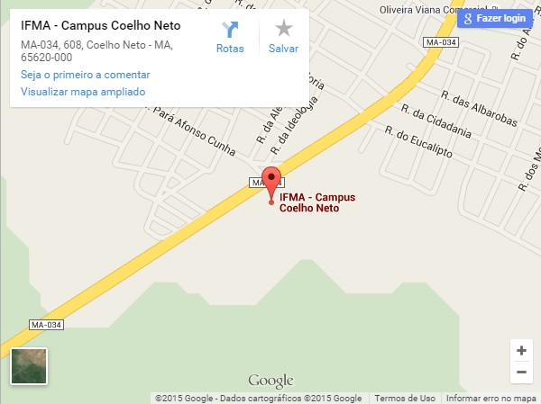

Localização
O Instituto Federal do Maranhão (IFMA) Campus Coelho Neto está localizado na MA-034, Av. Antônio Guimarães, S/Nº, Bairro Olho D’aguinha, Coelho Neto – MA, CEP: 65620-000.
Campus Coelho Neto
O Instituto Federal do Maranhão (IFMA) Campus Coelho Neto está localizado na MA-034, Av. Antônio Guimarães, S/Nº, Bairro Olho D’aguinha, Coelho Neto – MA, CEP: 65620-000.
